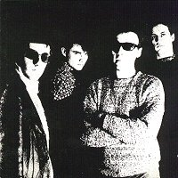

Television Personalities |
 1985 - Illuminated - JAMS 37 - LP Songs: Stop And Smell The Roses The Painted Word A Life Of Her Own Bright Sunny Smiles Mentioned In Dispatches A Sense Of Belonging Say You Won't Cry Someone To Share My Life With You'll Have To Scream Louder Happy All The Time The Girl Who Had Everything Paradise Estate Back To Vietnam
Daniel Treacy, Joseph Foster, David Musker, Mark Flunder
Recorded at Hit Factory. Produced by J. Foster & D. Treacy. |
1991 - Fire - REFIRE 10 - LP/CD/MC Songs: (same as original) All songs written by Dan Treacy and published by Twist And Shout Music. Remastered by Phil Vinall and Barry Woodward at Townhouse. Sleve recreation by Hand And Eye.
"The Painted Word", alongside Big Star's "Sisters Lovers" and any one of
Nick Drake's LPs is one of the best emotionally introspective LPs I've ever
heard. Dan Treacy's songs tear me apart. This is their finest moment. Both
the humor and tragedy of the songs are beautiful. It deserves re-release.
Well done Fire. Television Personalities The Painted Word was recorded in 1982/83 at The Hit Factory. The artistes were Daniel Treacy, Joseph Foster, David Musker and Mark Flunder, with Ingrid Weiss, David Walmsley and Martin Kerr-Daley. Produced by J. Foster & D. Treacy. Original sleeve design by Ingrid & Joe. Original cover photo by Alison Turner. |